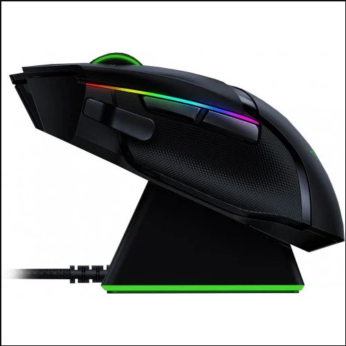

|  | Razer Basilisk Gamer egér: 77 290 F |
|---|---|
| Gamer világítás: igen | Szín: Fekete |
| Optikai érzékelő | 11db gomb |
| Garancia: 2 év | Vezeték nélküli: igen |
| USB csatlakozó: igen | iPon Gamer: igen |
Razer Hyperspeeded: 25% -kal gyorsabb, mint bármely más elérhető vezeték nélküli technológia, még azt sem fogja észrevenni, hogy vezeték nélküli egérrel játszik, mert a nagysebességű átvitelének, a legalacsonyabb kattintási késleltetésnek és a zavartalan frekvenciaváltásnak köszönhetően a legzajosabb, az adatokkal telített környezetben.
11 Programozható gomb: Legyen kéznél egy hatalmas parancs arzenál, használja fel kedvenc makróit és a másodlagos funkciókat a Razer Synapse 3 segítségével.
14 szabályozható Razer Chroma ™ világítási zóna Ennek a vezeték nélküli egérnek az egyes megvilágítási zónái külön-külön programozhatók a Chroma Studio alkalmazásban, ez kiemelkedően kiegészíti az összeállítását miközben megvilágítja ellenfeleit.
Szabályozható görgő-ellenállás: A Razer Basilisk Ultimate alján található egy tárcsa, amely lehetővé teszi, hogy görgetőkerékének ellenállását olyan sima vagy tapinthatóvá tegye, amennyit csak szeretné. Ezzel a testreszabási szinttel pontosabban elvégezheti a fegyver kiválasztást és a görgetőkerék egyéb műveleteit.
Akár 100 óra az akkumulátor élettartama A továbbfejlesztett vezeték nélküli energiahatékonyság fenntartja a csúcsteljesítményt akár 100 folyamatos órán keresztül.
Razer dokkoló: Adjon még több karaktert csatája számára egy hatékony töltődokkolóval, amely zökkenőmentesen integrálható más Razer Chroma-kompatibilis eszközökkel.
5 ON-BOARD memóriaprofil: Hozza bárhová a beállításait, és azonnal készen áll a játékra. Akár 5 profilkonfiguráció aktiválása a on-board memóriából vagy az egyéni beállításokból felhőalapú tárolás révén.
100% PTFE egérlábak: Élvezze az egér sima mozgását bármilyen felületen, a legtisztább, legmagasabb fokú PTFE- ből készült egérlábakkal - ez a anyag tapadásmentes edények bevonására szolgál.
Fogyasztói ár: 78190Ft